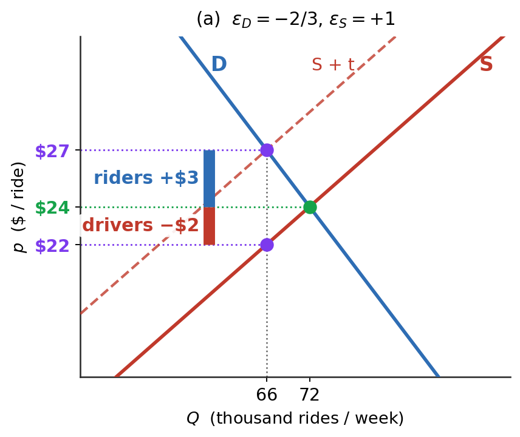
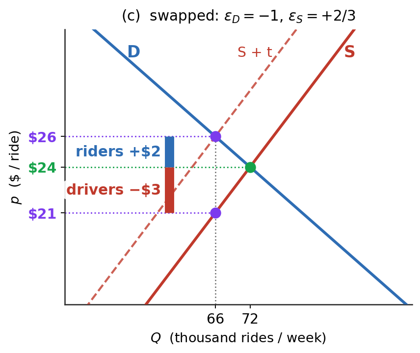

From midpoint to derivative — tax incidence, deadweight loss, and price controls in dollars.
Dr. Richeng Piao
Department of Economics
Northeastern University
Learning Objectives
By the end of class today, you will be able to…
1
Compute point elasticity \(\varepsilon=(dQ/dp)(p/Q)\).
2
Locate the elastic, inelastic and unit-elastic zones — and the revenue-maximising price (not the profit-maximising one).
3
Predict who bears a tax, from the two elasticities alone.
4
Measure deadweight loss, and say why it grows with \(t^{2}\).
Math Refresher — percentage change, elasticity and first-order conditions, before today.
The Tariff Question on the Front Page
Spring 2025 — the WSJ asks: who actually paid the new tariffs? Principles told us prices would rise. The front page wants a number.
Today's machine: point elasticity → incidence formula → deadweight integral.
Trump “Liberation Day” tariffs — April 2025
• Largest U.S. import-duty hike in ~80 years
• Gopinath-Neiman NBER (Jan 2026): pass-through to U.S. import prices ≈ complete
• NY Fed retail note (Mar 2026): consumer pass-through incomplete short-run, rising
What Elasticity Measures — and What Drives It
The law of demand says quantity reacts to price. Elasticity is how big that reaction is.
Amazon + Whole Foods (2017). Amazon cut prices because it “believed demand for many products sold at Whole Foods was more elastic than previous management did.”
Product
Own-price \(\varepsilon_D\)
Broad food groups
Eggs
−0.06
Beef
−0.35
Juice
−1.05
Specific cereals
Cap'n Crunch
−2.28
Cheerios
−3.66
Shredded Wheat
−4.25
Specific cars
Jeep Grand Cherokee
−3.06
Toyota Corolla
−3.92
What drives it: substitutes. More substitutes → more elastic.
Same ratio as the last slide — but there are two of them, and their signs are not the same. Both are unit-free, which is the whole reason the measure exists: you can compare eggs and petrol without dozens and litres getting in the way.
Price elasticity of demand:PED: \(\%\Delta Q^D\) for 1% \(\Delta P\)
Percentage change in quantity demanded divided by percent change in price.
Principles reported \(|\text{PED}|\) as a positive number and talked about magnitude only. From §3.1 on we keep the sign — it is doing real work, and dropping it is the single most common error on this chapter. That is Heads Up 3.1.
§3.1 From Midpoint to Point Elasticity
Promoting elasticity from a percent-change to a derivative
\(dQ/dp\) is the quantity response — units per \$1. We draw \(p\) up the vertical axis, so this is the reciprocal of the slope you see, not the slope itself. \(p/Q\) rescales it into percentage units.
Sign matters
Law of demand: \(dQ/dp < 0\), so \(\varepsilon_D < 0\). Micro Theory keeps the sign. No absolute-value hiding.
Same vocabulary: \(|\varepsilon|>1\) elastic · \(|\varepsilon|<1\) inelastic · \(|\varepsilon|=1\) unit elastic · \(0\) perfectly inelastic · \(\infty\) perfectly elastic.
Units discipline. \(\varepsilon_D\) is unit-free — but \(dQ/dp\) and \(Q\) are not. Every demand function in this chapter is printed with its units, and you should read the numbers out in full: “two hundred forty thousand entries a day,” never “240.” Write \(240\) where the curve means \(240{,}000\) and \(\varepsilon=-0.25\) becomes \(-250\) — off by a factor of a thousand, with nothing in the algebra to catch it.
Farewell to the Midpoint Method
You spent a chapter of Principles on this. Two minutes to retire it — and to say exactly what replaces it.
Its formal name is arc elasticity. Dividing by the midpoint rather than the starting value is what makes the answer come out the same going up as coming down — the one real reason to teach it.
It is a finite-difference approximation to the point elasticity somewhere between the two observations. Shrink the interval and it becomes the derivative.
Why one derivative replaces it
Hand us a calibrated curve \(Q^d(p)\) and there is nothing to average. Differentiate once, evaluate anywhere: \(\varepsilon_D=\dfrac{dQ}{dp}\dfrac{p}{Q}\). One line, exact, and it works when demand is not a straight line — which arc cannot do at all.
Where arc still earns its keep: two raw scanner observations and no model. No function, nothing to differentiate — average the endpoints. That is the only case.
For the record, on the toll demand below: arc across \(\$9\to\$12\) is \(-0.212\), point at \(\$12\) is \(-0.250\). Same slope \(-5{,}000\) both times — the only difference is which \((p,Q)\) you rescale by. That is the whole story, and it is why we stop computing the first one.
From here on: point elasticity only. If you have a function, differentiate it. That sentence is most of the reason this course is taught with calculus.
2 min — then we never do this again
Walkthrough 3.1 — Point Elasticity at the \$12 Toll
Problem. NYC congestion pricing: \(Q^d(P)=300{,}000-5{,}000P\) — \(Q\) in entries per day, \(P\) in dollars per entry. Find \(\varepsilon_D\) at \(P=\$12\).
Three steps — every elasticity in this course
1. Differentiate
\(\dfrac{dQ^d}{dP}=\mathbf{-5{,}000}\) entries per day, per \(\$1\) of toll — constant, because demand is linear.
2. Quantity at that price
\(Q^d(12)=300{,}000-5{,}000(12)=\mathbf{240{,}000}\) entries per day — two hundred forty thousand, not \(240\).
Work it first. Three minutes on your own, then we take the answer from the room — before the reveal.
3 min, then poll the room
\(|\varepsilon_D|=0.25<1\): inelastic. Commuters cannot easily stop driving into Manhattan, which is why the toll raises steady revenue and why traffic fell only modestly.
Two traps.Units: \(240\) instead of \(240{,}000\) gives \(\varepsilon=-250\) — if your answer is not between \(0\) and a few, you dropped a thousand. Pairing: the elasticity at \(\$12\) must use \(Q(12)\). Pairing \(\$12\) with \(Q(9)=255{,}000\) mixes two different points on the curve.
§3.2–3.3 Linear Demand Zones & Revenue
14 min · Where on the curve are you?
Elasticity varies along a linear demand curve
Nothing new needed — just the point-elasticity formula, read carefully.
\(Q^d>0\) always — so the bracket alone decides the sign.
So where you sit decides what to do
Inelastic
\(\varepsilon_D>-1\) ⇒ \(dR/dp>0\) — raise the price
Unit elastic
\(\varepsilon_D=-1\) ⇒ \(dR/dp=0\) — revenue peaks
Elastic
\(\varepsilon_D<-1\) ⇒ \(dR/dp<0\) — lower the price
Laffer logic for an excise tax: revenue climbs with the rate only until the market turns elastic — past that, a higher rate collects less.
Say it precisely
A revenue-maximiser stops at \(\varepsilon_D=-1\). A profit-maximiser with positive marginal cost stops earlier, in the elastic region \(|\varepsilon_D|>1\), where marginal revenue is still positive and can equal \(MC\). Unit elasticity is the profit rule only in the special case \(MC=0\). Chs 9 and 11 do the profit version properly.
Walkthrough 3.2 — The revenue-max NYC toll
Problem. \(Q^d(P)=300{,}000-5{,}000P\) — \(Q\) in entries per day, \(P\) in dollars per entry. Find the revenue-maximising toll.
The peak sits exactly where \(\varepsilon_D=-1\) — that is what a revenue-maximiser would charge, and the MTA is not one. A private firm with \(MC>0\) would stop earlier, still elastic. The real \$9 toll is deep in the inelastic zone.
Application — Innovation, Substitutes and Market Power
Consumer and producer surplus are how we measure the value a new product creates — e.g., a solar-powered car. The CS triangle is the welfare gain to buyers.
Thought experiment. Hold \(P^*\) and \(Q^*\) fixed. Draw two demand curves with different slopes, both through E. Which generates more CS?
1. Steep demand — inelastic
\(|\varepsilon_D| < 1\). Some inframarginal buyers will pay far above \(P^*\) ⇒ tall CS triangle. The profile of a brand-new product with few substitutes.
2. Shallow demand — elastic
\(|\varepsilon_D| > 1\). Substitutes are easy; buyers' WTP clusters near \(P^*\) ⇒ short CS triangle. The profile of a mature market.
Figure 3.3 — Consumer Surplus & Elasticity of Demand
Blue = a new innovative product (few substitutes ⇒ steep). Red = a mature market (many substitutes ⇒ flat). As rivals arrive, demand flattens blue→red and CS shrinks.
Role of elasticity. At the same \((P^*, Q^*)\), more inelastic demand ⇒ more CS. Elasticity is the geometric translator between “steepness” and “welfare.”
Role of innovation
New products whose buyers have highly varied WTP (insulin pumps, iPhones, EVs) face steep demand ⇒ a large CS triangle ⇒ big welfare gains.
Heads up — the word runs the other way
A dozen firms make eyeglasses, so the demand any one faces is elastic — nudge price up and buyers walk. Patent the contact lens and the substitutes are gone, so the demand you face becomes LESS elastic, not more. That is what market power is (Chs 9, 11–12).
§3.4 Income & Cross-Price Elasticities
Two more elasticities, same template
The sign classifies the good · the size ranks it
Income elasticity
\(\varepsilon_{I,i} = \dfrac{\partial Q^d_i}{\partial I} \cdot \dfrac{I}{Q^d_i}\) — the sign classifies the good, the size ranks it
Restaurant meals, \(\varepsilon_I \approx 1.0\) — right on the luxury edge.
\(\varepsilon_{I,i} < 0\) — Inferior
Quantity falls as income rises — buyers substitute toward something better.
MBTA Orange Line — as income rises, riders switch to cars.
U.S. food: \(\varepsilon_I \approx 0.1\)–\(0.3\). Bus travel can flip from inferior to normal at different income levels.
Cross-price elasticity
\(\varepsilon_{i,j} = \dfrac{\partial Q^d_i}{\partial p_j} \cdot \dfrac{p_j}{Q^d_i}\) — does \(i\) sell more or less when \(j\) gets pricier?
\(\varepsilon_{i,j} > 0\) — Substitutes
\(j\) gets pricier, buyers move to \(i\). Tea/coffee, iPhone/Galaxy, ride-hail/rental.
Raise the price of one console, buyers shift to the other.
\(\varepsilon_{i,j} < 0\) — Complements
\(j\) gets pricier, demand for \(i\) falls too. Printer/ink, console/games.
Console and cartridge — price up on one, demand down on both.
\(\varepsilon_{i,j}=0\) — unrelated goods, no cross-relationship at all. • Antitrust use: a large positive \(\varepsilon_{i,j}\) puts two products in the same relevant market for merger analysis.
§3.5 Tax Incidence — Who Actually Pays?
14 min · The wedge equation
A tax is an incentive — and elasticity is the response
A per-unit tax \(t\) raises what buyers pay to \(p_c\) and cuts what sellers keep to \(p_s\). Who moves?
Inelastic — weak response
Eggs \(-0.23\), cigarettes \(-0.4\), insulin \(\approx 0\). Buyers cannot walk away → \(p_c\) rises by nearly all of \(t\). Fat revenue, thin DWL.
Elastic — strong response
Luxury yachts \(-2\), one cereal brand, soda with substitutes. Buyers leave → the tax lands on sellers. Thin revenue, fat DWL.
Two halves of one story — and §3.5 turns it into a formula.
Statutory incidence (whose paycheck the deduction shows up on) is economically irrelevant.
Equilibrium with tax
Statute on sellers:
\(Q^d(p_c) = Q^s(p_c - t)\)
One equation in one unknown \(p_c\) for each \(t\). At \(t = 0\): \(p_c = p_s = p^*\).
The comparative-statics question: how do \(p_c\) and \(p_s\) move as \(t\) rises? Total differentiate.
Try It — A \$5 tax on rideshare drivers
Problem. Rides: \(Q^d = 120 - 2p\), \(Q^s = 3p\) (\(Q\) in thousands/week, \(p\) in \$/ride). The city charges drivers \(t=\$5\) per ride. Find \(p_c\), \(p_s\), \(Q\), then CS, PS, tax revenue and DWL.
\(\dfrac{dp_c}{dt}=\dfrac{\varepsilon_S}{\varepsilon_S-\varepsilon_D}\) — a ratio of one side's responsiveness to the total.
Demand inelastic
\(\varepsilon_D\to 0 \Rightarrow dp_c/dt\to 1\) Buyers pay it all. Cigarettes, eggs, insulin.
Supply inelastic
\(\varepsilon_S\to 0 \Rightarrow dp_c/dt\to 0\) Sellers eat it. Land, port slots, sports stars.
The side that cannot walk away bears the tax.
Walkthrough 3.3 — the rule works without a tax
Same eggs, no tax. \(Q^d = 200-5p\), \(Q^s = 50+10p\) (\(Q\) in M dozens/wk, \(p\) in \$/dozen); \(p^*=\$10\), \(Q^*=150\). Bird flu takes 30 million dozen off supply. Where does that 30 go?
Step 1 — the two elasticities at \(p^*\)
\(\varepsilon_D = -5\cdot\tfrac{10}{150} = \mathbf{-\tfrac{1}{3}}\) · \(\varepsilon_S = 10\cdot\tfrac{10}{150} = \mathbf{+\tfrac{2}{3}}\) Supply is twice as elastic as demand.
Step 2 — where does the 30 go?
At the old \(\$10\) the shock leaves a 30-unit shortage. Price rises \(\$2\) until it closes: • buyers cut back \(5\times 2 = \mathbf{10}\) — this is the fall in quantity, \(150\to 140\) • sellers bring back \(10\times 2 = \mathbf{20}\) 10 + 20 = 30. The quantity piece is the buyers' piece.
Step 3 — the two shares, and Ch 2
Each piece is its own elasticity's share: quantity \(= \dfrac{|\varepsilon_D|}{|\varepsilon_D|+\varepsilon_S} = \dfrac{1/3}{1} = \mathbf{\tfrac13}\) of 30 \(= 10\) · price-recovered \(= \mathbf{\tfrac23}\) of 30 \(= 20\). Ch 2 re-solved the system and got the same \(\Delta p=+\$2\), \(\Delta Q=-10\).
Careful — this split is not the tax split. Here it is price vs quantity. On the next slide it is buyer vs seller.
Same ratio, same reason: the more elastic side moves, the less elastic side absorbs.
Walkthrough 3.4 — back to the \$5 tax: who actually pays?
Same market as the Try It. \(Q^d = 120-2p\), \(Q^s = 3p\), \(t=\$5\) on drivers. We already solved it the long way: \(p_c=\$27\), \(p_s=\$22\). Now get the same answer from the two elasticities alone.
\(\dfrac{\varepsilon_S}{\varepsilon_S+|\varepsilon_D|}=\dfrac{1}{1+2/3}=\mathbf{0.6}\) → riders \(\mathbf{\$3}\), drivers \(\mathbf{\$2}\). Which is exactly \(\$27-\$24\) and \(\$24-\$22\). ✓
Step 3 — swap the two numbers
\(\varepsilon_D=-1\), \(\varepsilon_S=+\tfrac{2}{3}\) → \(\dfrac{2/3}{5/3}=\mathbf{0.4}\): riders \(\mathbf{\$2}\), drivers \(\mathbf{\$3}\). The shares flip, and nobody changed who writes the check.
Your homework is the tie. Problem 4's market has \(\varepsilon_D=-\tfrac12\) and \(\varepsilon_S=+\tfrac12\) at \(p^*=\$20\) — equal, so the split is exactly half, which is why \(p_c = 20 + t/2\).


Who pays? Move the elasticities
Same market, same \(\$5\) tax on drivers. Only the steepness of the two curves changes. Buyers' share \(=\varepsilon_S/(\varepsilon_S+|\varepsilon_D|)\).
Heads Up 3.3 — Statutory incidence is irrelevant
Whether the statute puts the tax on the buyer or the seller, the same \(dp_c/dt = \varepsilon_S/(\varepsilon_S - \varepsilon_D)\) emerges from total differentiation. Mathematical identity, not coincidence.
What is conventional
The sign on \(\varepsilon_D\). If you let the absolute value slip and write \(\varepsilon_S + |\varepsilon_D|\) in the denominator, the formula still gives the right answer. Mix the two conventions and you'll compute negative shares.
Poll #2: Burden split
Luxury yacht market: \(\varepsilon_D = -2.0\) (rich folks have substitutes), \(\varepsilon_S = 0.5\). 10% excise tax. Whose burden is bigger?
A) Buyers (rich folks pay)
B) Sellers (yacht builders eat it)
C) Equal split
D) Depends on the statute
60 sec to vote
Answer: B — Sellers eat it
Consumer share \(= 0.5 / (0.5 + 2.0) = 0.20\). Sellers bear 80% — and this one was run as a real experiment.
The law. The 1990 federal luxury excise took 10% of the amount above \$100,000 for boats, \$250,000 for aircraft, \$10,000 for jewellery and furs, \$30,000 for cars.
Why it died. Buyers had substitutes — an older boat, a foreign yard, no boat at all. Boatyards and their workers did not. Congress repealed everything except the car tax in 1993, retroactive to 1 January; the campaign was run by the builders, not the buyers. The car tax survived to 2002.
Trap (D): Statutory irrelevance — the formula doesn't see whose paycheck the deduction shows up on. It sees behavior.
§3.6 Deadweight Loss as a Welfare Integral
10 min · The triangle in dollars
Why the integral collapses to a triangle
Both curves are straight lines, so the gap between them is a straight line too — and the area under a straight line is a triangle.
Both routes give \$15M. For a straight-line market the triangle is the integral — so use the triangle.
The Cobra Effect — then and now
A bounty per dead cobra. 1. People hunt cobras — it works. 2. People start breeding them. 3. Bounty ends → snakes released.
Charlottesville, VA · 1992
1. Policy — pay per bag of trash. 2. Response — bags get heavier, and some trash never reaches the curb. 3. Result — official trash −37%, real waste only −14%. The gap went roadside, into dumpsters and into neighbours' bins (Fullerton & Kinnaman, AER 1996).
Seattle, WA · the “Seattle stomp”
1. Policy — pay by the volume of the can. 2. Response — residents stomp the trash flat to cram more in; some bags go out of car windows. 3. Result — the fee moved the cost, not the trash.
Tax the margin you can measure, and people move to the one you cannot. Both programmes still work — but only when the cheap avoidance margin is closed (kerbside recycling, monitored drop-off, real fines).
Brainstorm 1 — a levy on AI
A state puts a levy on the electricity an AI data centre buys. Work it in three steps.
1 · Who pays?
Which two numbers do you need before you can answer?
2 · Where do they go?
Name one way a firm avoids the levy without using less AI.
3 · Make it stick
Change one thing about the levy so that margin closes.
Stuck? Three nudges. (1) You already have the formula — what does it take as inputs? (2) A data centre is a building; a workload is not. (3) Ask what the levy is actually charging for, and whether it could charge for something harder to move.
A country has run this experiment. Uganda taxed social media at 200 shillings a day from July 2018. Internet users fell about 30% — and millions of people simply moved to VPNs, which the tax could not see. It was replaced in 2021.
Bring back one sentence: who pays, and the margin you would close.
2 min with a neighbour · 2 min to share
§3.7 Pass-Through Regimes
8 min · The 0–100% benchmark and what breaks it
Three pass-through regimes
\(0 < dp_c/dt < 1\)
Sub-100%
Linear competitive baseline. Both finite elasticities.
\(dp_c/dt = 1\)
Full 100%
Perfectly elastic supply (\(\varepsilon_S \to \infty\)). Small open economy on world market.
\(dp_c/dt > 1\)
Over-shifting
Cannot arise in competitive linear model. Fingerprint of market power.
Pass-through is a testable empirical quantity. When the data show \(> 100\%\), Ch 11 (monopoly) gives the formula that explains why.
Theory & Data 3.2 — why two soda taxes gave two answers
Both cities taxed distributors in 2017. Theory says pass-through sits between 0 and 100%. It did — but not at the same place, and the gap is the lesson.
City
Tax
Pass-through
What explains it
Philadelphia
1.5¢/oz
≈ 97%
Chain groceries that price a whole city at once. Almost the entire tax reached the shelf.
Boulder
2¢/oz
≈ 50% to 75%
Smaller market, easy to shop outside it — and the two numbers come from two different data sources.
The number is not the theory. Pass-through is \(\varepsilon_S/(\varepsilon_S-\varepsilon_D)\) in both cities. What differs is the market — and what you measured it with.
Boulder's 50% is scanner data; 75% is a store audit. Same tax, same year, different instrument. When you read an estimate, ask what produced it.
Philadelphia: Seiler, Tuchman & Yao (2021). Boulder: Cawley et al. (2021).
Poll #3: a tax of \$1, a price rise of \$1.20
A city puts a \$1 per-unit tax on sellers. Retail prices rise by \$1.20. Which single explanation fits?
A) Demand is perfectly inelastic
B) Sellers have market power
C) The tax was really collected from buyers
D) Supply is perfectly elastic
Vote 60s
Answer: B — over-shifting needs market power
Why B. A firm with market power charges a markup over cost. Raise its cost by \$1 and the markup is applied to the higher cost too — so the price can move by more than the tax.
Why not A or D. Both are the limiting cases of our formula: \(\varepsilon_D\to 0\) or \(\varepsilon_S\to\infty\) gives \(dp_c/dt = 1\) — exactly \$1, never \$1.20. In competition the wedge splits, so pass-through is capped at 100%.
It happens. The 2018 washing-machine tariff: pass-through estimated at 108–225%. Washers rose about \$86 — and dryers, which were never tariffed, rose about \$92, because the pair is priced together (Flaaen, Hortaçsu & Tintelnot, AER 2020).
European wine, 25% tariff of 2019–21: retail rose only 6.9%, yet consumers paid about \$1.59 a bottle against \$1.19 of tariff — each link in the chain marks up the higher cost (Flaaen, Hortaçsu, Tintelnot, Urdaneta & Xu).
Trap C. Statutory incidence again: who hands over the money cannot change the price by a cent. Heads Up 3.3.
Over-shifting is a fingerprint of market power, not a puzzle about taxes. It is the first time this term the competitive assumption visibly fails — Ch 11 derives the monopolist's pass-through properly.
Key Takeaways
Elasticity is a point, not a slope. \(\varepsilon=(dQ/dp)(p/Q)\) — it varies along a straight line.
Revenue peaks at \(\varepsilon_D=-1\). Inelastic → raise price. Elastic → cut it. A profit-maximiser with \(MC>0\) stops earlier, still elastic.
Whoever can walk away, walks away. Who writes the cheque is irrelevant.
DWL grows with \(t^{2}\). Double the tax, quadruple the damage.
Ch 2's grocery manager could say which way price would move. You can now say by how much, and who pays for it.